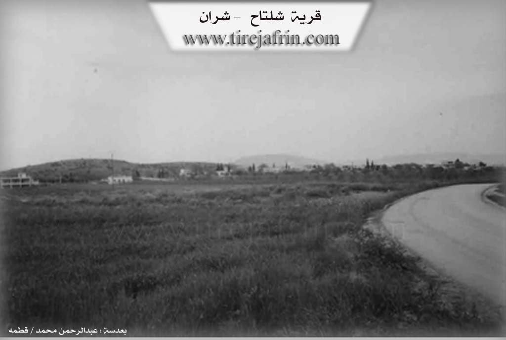
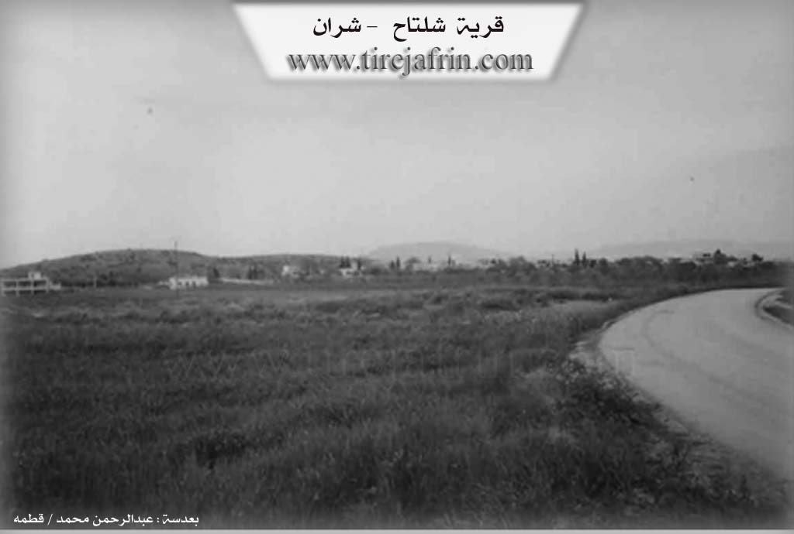

General Information
Nahiya (Subdistrict)
Şera
Also Known As
Sheltah, Şiltehtê, Şîltahetê, Şîlte'tê, Şîltehtê, شلتاح, شيل تعتيه
Tribes
Olani
Families, Clans, etc.
Foundation Date
1850, 1900
Size

Photos

 

Foundation/Origin Information of Şîlte'tê
Founded by the Olani tribe, who migrated from the Hecî Omellî region of Dersim in Northern Kurdistan. The village was historically administered as part of Kilis before the modern borders were drawn.
Source: Ax û Walat Transcript
Possible Village Name Meaning of Şîlte'tê
The origin of the word "Sheltah", meaning "blue rocks". The rocks of those areas are of different colors, with what appears near the Afrin River tending toward an ash-gray color mixed with blue.
Source: TirejAfrin Site
The village derives its name from the Kurdish "şil teht" (wet rock), a reference to a perpetually damp local rock formation.
Source: Ax û Walat Transcript
From "The Mountains of the Kurds (Afrin Region): a Comprehensive Geographical Study"
Şîlte’t, شلتاح (Shiltah) /280 - 300 AD - 15 km - 430 m/
- Shiltah: the origin of the word is "Shaltah," which is a distortion of its Kurdish origin, Şîn teht, meaning "the blue rocks." And the letter "sh" was replaced by "sh," which is a common occurrence in the Kurdish language. The rocks of that sub-district are of different colors, but what appeared of them next to the Afrin River is a pale blue color that changes to a pale green when it gets wet.
- A small village on a plateau that slopes steeply towards the valley of the Afrin River to the east, and it meets the Turkish border from the north. It is surrounded by old ruins and caves.
Taken from 261, 262 of the Arabic edition of:
Ali, Mohammed Abdo. Jibal al-Kurd (Mintaqat Afrin): Dirasah Jughrafiyah Shamilah [The Mountains of the Kurds (Afrin Region): A Comprehensive Geographical Study]. Self-published, 2014.
Summaries
I. Summary from TirejAfrin Site of Şîlte'tê (English)
According to the book 'Mountain of the Kurds (Afrin)' Geographic Study:
Şîlte't, Sheltah (شلتاح) /280n - 300h - 15km - 430m/:
- Sheltah (شلتاح): The origin of the word "Sheltah" (شلتاح), meaning "blue rocks" (الصخور الزرقاء), but the letter "l" was replaced with "n", which is common in the Kurdish language. The rocks of those areas are of different colors, with what appears near the Afrin River (عفرين) tending toward an ash-gray color mixed with blue, making them appear bright blue.
- A small village located on a plateau that slopes steeply toward the Afrin River (عفرين) valley to the east, bordering the Turkish borders from the north. Around it are archaeological ruins and caves.
According to the book 'Afrin.... Its River and Green Hills':
Sheltah (شلتاح): A village in Jabal al-Akrad (جبل الكرد) belonging to Sheran District (شران), Afrin (عفرين) region, Aleppo Governorate (حلب), (263 people).
It is a small village located on a wide and undulating limestone plateau that slopes steeply toward the Afrin River (عفرين) valley to the east, and gently toward the south and west. It is connected by a plain where pastures spread above it. It is 15km from the town of Sheran (شران) in the northeastern direction, and borders the current borders with Turkey. The region's construction is ancient, evidenced by the presence of ruins and caves around it and near the Turkish borders from the eastern side. It is bordered to the north by a deep valley and the point of the Turkish-Syrian border directly at 200m distance, to the south by a valley and fertile plain and the course of the Afrin River (عفرين), to the east by a slope and valley and the course of the Afrin River (عفرين) and the point of the Turkish-Syrian border, and to the west by a valley and fertile agricultural plain planted with olive trees and the village of Dêr Sawan (دير صوان) and the ancient Prophet Houri Bridge (جسر النبي هوري) named after Prophet Houri (النبي هوري). It has about 35 houses and the village is approximately 150 years old. Its old houses are stone and clay with wooden roofs, and the modern residences are cement and stone. It has an electricity network and the village drinks from a water network connected to artesian wells in its eastern direction and a paved road to the village center and Mersewa (مرساوا). It has an elementary school, a mosque, and a border police station. Its residents work in olive and grape cultivation and livestock raising. It has telephone lines and a modern olive press located near the Roman bridge, 3 kilometers from the bridge. It is a border village on the eastern side of Afrin city.
Village mayor: Mohammed Hamo (محمد حمو)
Information Sources:
1 - Book 'Mountain of the Kurds (Afrin)' Geographic Study by Dr. Mohammed Abdo Ali (محمد عبدو علي).
2 - Book: 'Afrin.... Its River and Green Hills' by writer Abdulrahman Mohammed (عبدالرحمن محمد) from Qatma (قطمه).
3 - Studies by Tereij Soft Center (تيريج سوفت) / Abdulrahman Haji Othman (عبدالرحمن حاجي عثمان)
4 - Some village residents.
Prepared and executed by: Director of Tereij Afrin Website (تيريج عفرين): Abdulrahman Haji Othman (عبدالرحمن حاجي عثمان)
20 / 12 / 2013
II. Summary from Ax û Walat Transcript of Şîlte'tê
The village of Şiltehtê, located on the border near Gela Huriye, derives its name from the Kurdish "şil teht" (wet rock), a reference to a perpetually damp local rock formation. Its identity is deeply connected to its water sources: one stream flowing from Northern Kurdistan and another fed by numerous local springs, with the Afrin River and Germik River merging approximately five kilometers from the village. Founded about a century ago by the Olani tribe, who migrated from the Hecî Omellî region of Dersim in Northern Kurdistan, the village was historically administered as part of Kilis before the modern borders were drawn. The local economy is primarily agricultural, with residents planting seedlings of various vegetables and fruits in a mixture of local red soil and sand. While cotton and tobacco were grown 50-60 years ago, the village is also known for its fish lake, Gola Masiyan, which was established around the same time by Fayiq Axa and Menaf Axa. Culturally, Şiltehtê is home to the Kawsanê shrine, a significant site visited every Wednesday by people seeking healing or making wishes. The village also maintains rich traditions, such as the "Şeva Henê" (Henna Night), a women-only pre-wedding ceremony where the bride's hand is hennaed after receiving a gift from a male relative, and the preparation of a special sweet dish, "kinefe," for guests, especially during the winter.